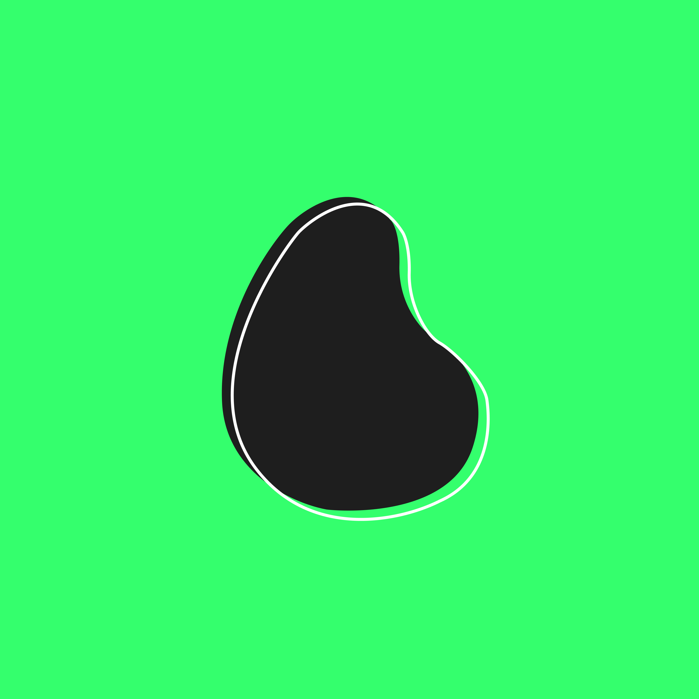
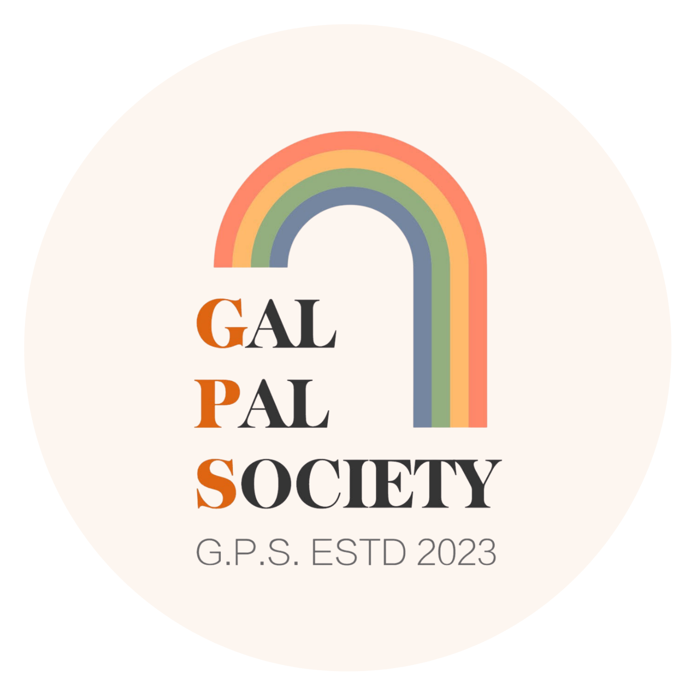

PIT-A-PAT↗Rugs by independent Chinese designers. We license the art, work with factories, and ship it to your floor. I run paid ads on Meta and Google, and grew our IG and TikTok to 1.5k+ followers and counting. Also the part-time rug model. follow us on IG
Dec 2023 – present

02
FocusML↗Built at a Google Developer Group x AIRESS hackathon. Helps ADHD brains actually start on the learning piling up in their bookmarks by recognizing the mental hurdles in the way, and clearing them one tiny step at a time. watch the demo
Hackathon build · live
03
Topic Suggestion Board↗A topic board I built for the women-in-tech mental health community I ran, so members could pitch and vote on what we talk about next.
Side build · live
I gather peoplecome say hi!

Gal Pal Society↗A community fostering empowerment, visibility, and belonging for Chinese-speaking queer women. I run the website and social outreach.Web & Outreach
Women Building the Future↗A salon in Toronto for women and nonbinary folks in tech, AI, and startups, with founder demos and builder spotlights. I co-hosted, organized, and spoke.Organizer & Speaker
Iris Lens Podcast↗A podcast on practical AI upskilling, sharing the workflows founders and CEOs actually use to build with AI. I helped with event organization, internal workflows, and outreach.Ops & Outreach
Beyond the job title
rock climbingchasing my first V4, see @babosclimbsoccerI'm a midfieldermodelingyes, in front of the cameraweightliftingI absolutely love leg daysvideo gamessplatoon 3 is goated
I believe the best marketers are interesting humans first. So tell me what you're building, what you're climbing, or what you're obsessed with lately. I genuinely can't wait to hear about it!
currently:→ chasing my first V4→ next rug drop loading…→ learning french→ saying yes to coffee chats